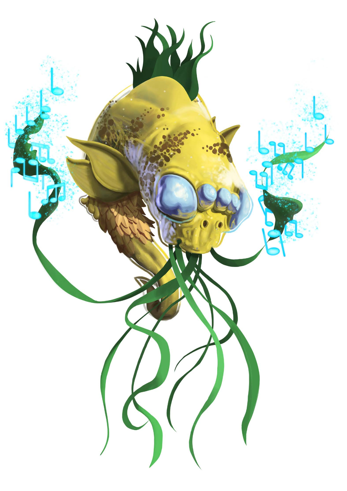
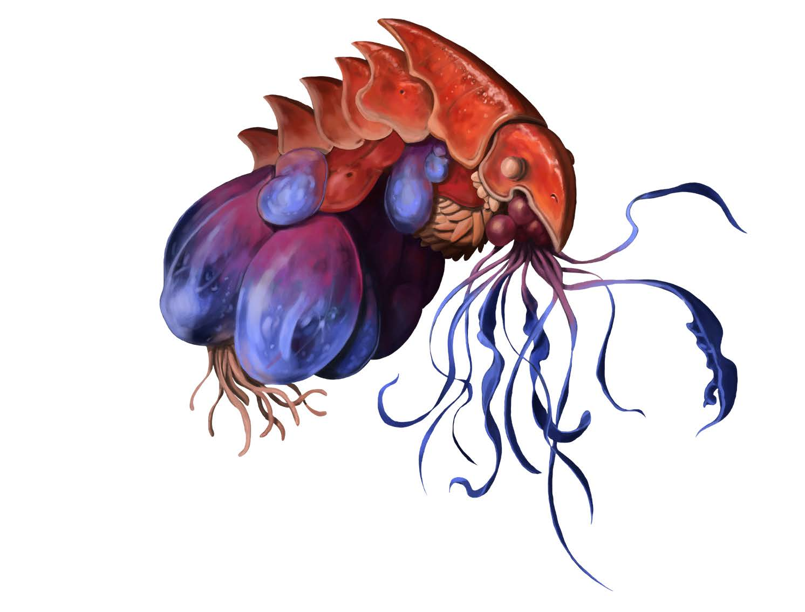

| Aggiungi +1 alle seguenti statistiche: (Attributi +): Costituzione, Saggezza, Un aumento libero da assegnare. | Sottrai -1 alle seguenti statistiche: Destrezza. |
LANGUAGES: Brethedan, Comune.
Lingue aggiuntive pari al tuo modificatore di Intelligenza (se positivo). Scegli liberamente dalla lista dei linguaggi comuni e planetari a cui hai accesso.
Telepatia Limitata: Comunichi mentalmente entro 9 metri con creature che condividono un linguaggio con te. Non garantisce l'accesso ai pensieri altrui.
Adattamento Genetico: Rimodelli il tuo telaio biologico per le emergenze. Puoi riaddestrare un qualsiasi talento di ascendenza o lignaggio in appena 1 giorno di inattività invece di 1 settimana.
Scegli uno dei seguenti lignaggi barathu al 1° livello per determinare i tratti mutati e biologici unici derivati dal tuo sviluppo o dal tuo retaggio su Liavara.
Hai comunicato con la melodia cosmica di Liavara e questo ti ha cambiato. Fai fatica a esprimere i frammenti di ricordi ed emozioni se non attraverso il canto o simili emanazioni psichiche.
Sei giovane e inesperto rispetto agli altri barathu, con una visione individualista plasmata dai contatti con altre culture. La tua forma è altamente mutabile, poiché non hai ancora scelto di specializzarti.
Il tuo corpo è un laboratorio vivente, che ti consente di ingerire materie prime e raffinarle in utili medicinali e altri prodotti chimici o biologici.
Sei un'entità unica formata dall'unione costante di due o più barathu che apprezzano l'atto della combinazione a tal punto da aver scelto di non tornare all'isolamento.
Sviluppi arti inferiori robusti che ti permettono di camminare sulla terraferma. Aumenta la tua Velocità sul terreno a 20 piedi (6 metri).
Dalla tua educazione hai appreso le usanze del tuo popolo, cercando al contempo di espandere la tua mente nei campi della creazione.
Hai esplorato le regioni più oscure dello spazio profondo e hai trovato il modo di mutare i tuoi recettori biologici.
Sporgenze acuminate spuntano dal tuo corpo, aumentandoti la CD di Fortitude (Tempra)contro le prove di Atletica per Afferrarti o Spingerti di 1.
Migliori l'articolazione e la motricità fine dei tuoi arti. Aumenti il numero delle tue braccia di due. Speciale: Acquistabile più volte.
Manipoli il tuo sistema immunitario cellulare per eradicare virus e infezioni tossiche.
Sviluppi un lungo tentacolo biologicamente reattivo che può sferzare l'aria come una frusta micidiale.
Frequenza: 1/ora | Innesco: Un nemico mette a segno un colpo critico contro di te con un Colpo.
Modifichi la genetica molecolare per resistere a specifiche fonti esterne. Speciale: Acquistabile più volte per tipi diversi.
Frequenza: 1/ora | Sfoghi una nube densa di gas biologico per spingerti in avanti ad alta pressione.
Mimi e cataloghi la genetica delle razze alleate con cui sei entrato in contatto alleato o stretto.
Prerequisiti: Lignaggio Dreamer Barathu
Prerequisiti: Vent Gas
Modifichi finemente i tuoi organi interni per catalizzare i prodotti farmaceutici curativi con efficienza ultra-potenziata.
Frequenza: 1/giorno | Ti fondi temporaneamente con il nucleo biologico di un alleato consenziente adiacente per fargli da scudo.
Prerequisiti: Convergent Evolution